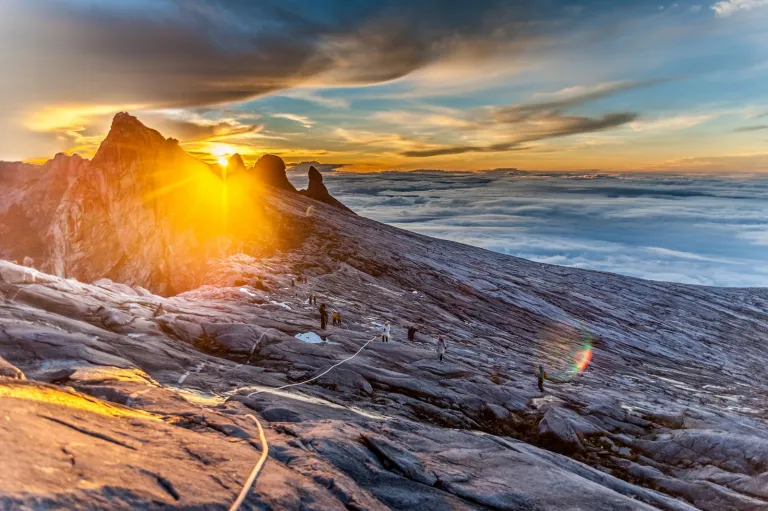

FACTS 1

Mount Kinabalu is one of the most prominent and spectacular landmarks in Southeast Asia. Located in the state of Sabah, Malaysia, this majestic mountain is a part of the Crocker Range and is the highest peak in the region. It stands at an impressive altitude of 4,095 meters above sea level, boasting a vast range of habitats from rich tropical lowland and hill rainforest to tropical mountain forest, sub-alpine forest and scrub on the higher elevations.
As a significant part of Malaysia’s natural heritage, Mount Kinabalu offers visitors an opportunity to explore its diverse ecosystem that is home to thousands of species of flora, many of which are endemic to the area. The mountain’s unique biodiversity has earned it recognition as a UNESCO World Heritage Site. It is not just nature enthusiasts who are drawn to Mount Kinabalu; the mountain is also a favorite destination for mountaineers from around the globe. Despite its formidable height, the peak can be reached without specialized mountaineering equipment or skills, making it accessible for adventurous tourists.
FACT 2
Sunrise over Mt. Kinabalu silhouette, Kota Kinabalu Sabah Borneo Malaysia. | Nokuro
Country: Malaysia
State/Province: Sabah
Mountain Range: Crocker Range
Parents: Crocker Mountains
Elevation: 13,435 feet / 4,095 meters
Prominence: 13,435 feet / 4,095 meters
Isolation: 1561.55 miles / 2513.07 kilometers
Nearest Higher Neighbor (NHN): Ngga Pilimsit
First Ascent: In March 1851, Hugh Low summited the mountain’s plateau, but not the extremely steep peak, claiming that it was “inaccessible to any but winged animals.” However, in 1888 John Whitehead ascended the highest peak.
FACT 3

1. Kinabalu is a mountain located on the island of Kalimantan, precisely in the state of Sabah, Malaysia
2. The highest peak of Mount Kinabalu is at a height of 4,094 meters above sea level. Highest on the island of Kalimantan, you know!
3. Kinabalu is also the fifth highest mountain in Southeast Asia
4. Mount Kinabalu is a symbol of the greatness of the people of Sabah. This mountain is also depicted in the state emblem of Sabah
5. In addition, the name Kinabalu was also adapted into the name of the capital of Sabah, namely Kota Kinabalu